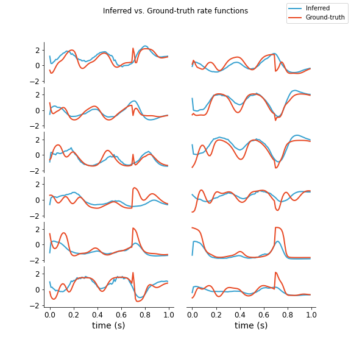
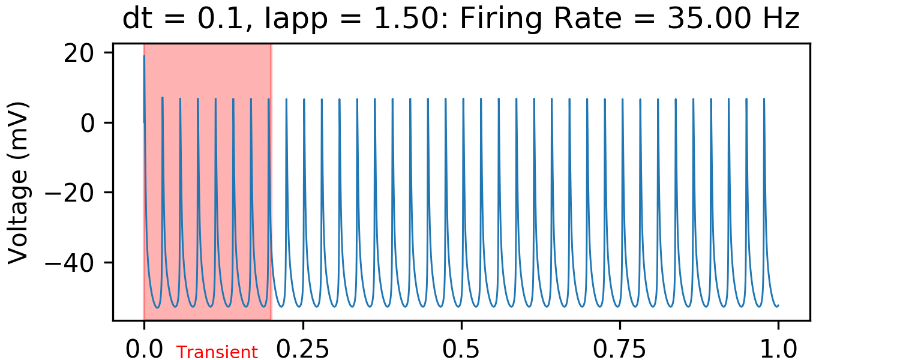
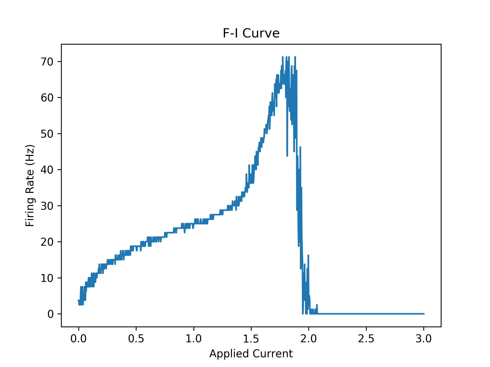
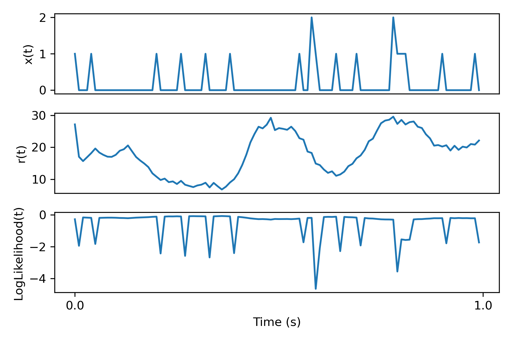
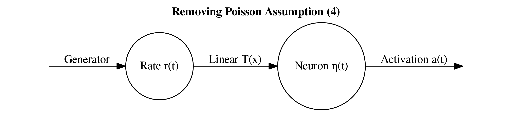
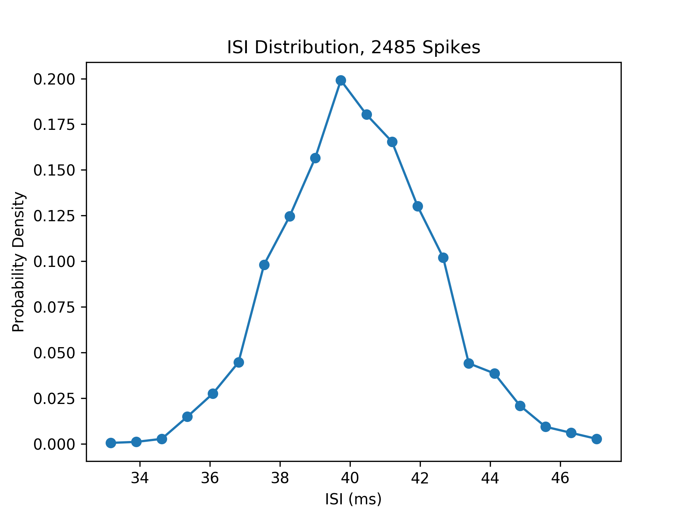
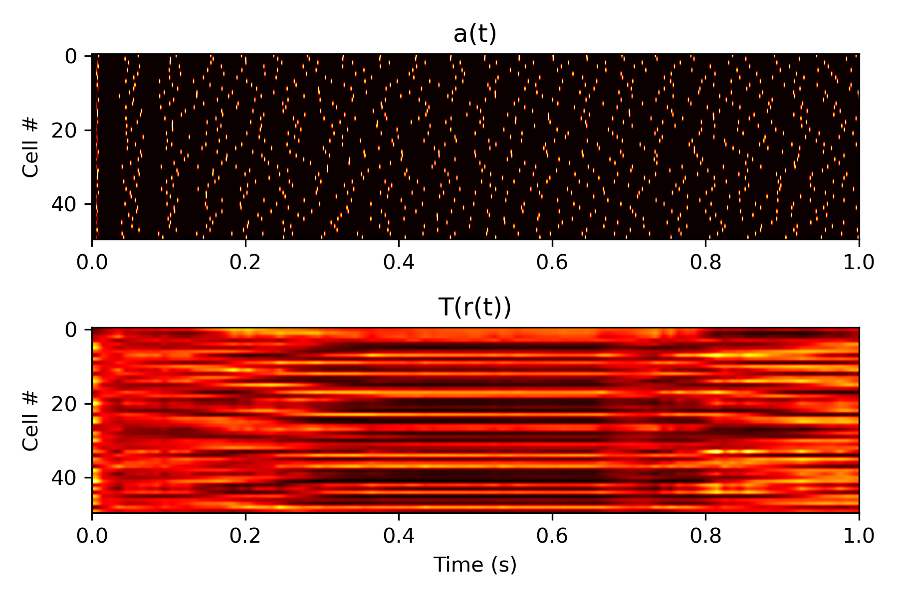

Training Biological Neural Networks on Spiking Data
Overview
Inspired by my work on training biological neural networks (BNNs) and papers training neural networks on spiking data from real animals to infer the structure underlying the data, I wanted to try and combine these two approaches. This work is kind of a long shot because I have only been succesful in training BNNs on MNIST which is one of the dumbest tasks in deep learning. I made the unfotunate decision to do this work as a final project for my one class, requiring me to double down and try and get it done in a very short amount of time (around two weeks). This article will take the form of my thoughts as I think them up on the topic, with the hope of forming some coherent approach.
Inspiration: LFADS

The main work I aim to build on is this "LFADS" paper, and the preprint introducing the technique here.

What is it that LFADS is trying to do? Above is a schematic underlying the main idea of the approach. The indexing corresponds to the four assumptions detailed in their introduction. Essentially, the assumption is that we have some dynamical system \(F\) driven by some external inferred input as well as an initial condition which is also inferred. The output is then some transformation of the internal state \(F(t)\) to a spiketrain or firing rate trace that should approximate the original spiketrain. In the LFADS paper, they assume that external output (4) is modelled by a Poisson process.
The diagram above really just describes the network generator (decoder) and drops details of the encoder. The encoder, however, is central to training the encoder and inferring (2) and (3), the initial conditions, and what drives the network over time. These are what is considered the "latent representation" of the data because it is a (typically lower-dimensional) representation of the data that drives the system to give us a prediction. We can view this as a form of compression but also can view it is as a translation from raw data to some representation that is potentially more interpretable and tells us something about the system. The latter perspective is more important in the LFADS case, I think.
Here are some of the more internal details of LFADS. They use a bidirectional RNN encoder which encodes a spiketrain to distributions for each input in the spike array. This bidirectional RNN consists of two seperate RNNs: one which gets fed the data forwards in time and one that goes backwards in time. Then, they use another RNN that is just trained forwards to predict firing rates and then corresponding spiketrains from the input distributions. The aim is to reproduce the data by encoding it using the distributions. Variational autoencoders are used because the trained decoder (also called generator) can be used to generate novel samples given inputs not produced by the encoder.
Below is some Pytorch code I found to initialize the RNN components for LFADS which gives a more clear picture of the architecture. They use GRUs instead of vanilla RNNs to avoid some of the pitfalls in vanilla RNNs such as vanishing gradients.
# LFADS Construction #
# Generator Forward Encoder
self.gru_Egen_forward = nn.GRUCell(input_size= self.inputs_dim, hidden_size= self.g0_encoder_dim)
# Generator Backward Encoder
self.gru_Egen_backward = nn.GRUCell(input_size= self.inputs_dim, hidden_size= self.g0_encoder_dim)
# Controller Forward Encoder
self.gru_Econ_forward = nn.GRUCell(input_size= self.inputs_dim, hidden_size= self.c_encoder_dim)
# Controller Backward Encoder
self.gru_Econ_backward = nn.GRUCell(input_size= self.inputs_dim, hidden_size= self.c_encoder_dim)
# Controller
self.gru_controller = nn.GRUCell(input_size= self.c_encoder_dim * 2 + self.factors_dim, hidden_size= self.controller_dim)
# Generator
self.gru_generator = nn.GRUCell(input_size= self.u_dim, hidden_size= self.g_dim)
Incorporating BNNs: First Steps
Let's look at the plot I made of the dynamical system hypothesis above and let's try come up with something using BNNs to replace/incorporate into LFADS. First, let's ask what it is that \(F\) is really approximating. In the case of spiking data from from the motor cortex, \(F\) is approximating a population of neurons in the motor cortex that are being sampled. This is where there is a clear application of BNNs: just replace \(F\) with some network of biological neuron models with a sufficient level of complexity. The idea is something like this:

Firstly, let's play with LFADS some before we try and add anything new. I used Pytorch code for LFADS I found here which has an easy to use notebook that trains on a Lorenz attractor task. Below are the results for a randomized batch of testing data comparing firing rate for the inferred and real outputs. This was using 200 epochs of training and using a latent space encoding dimension of 1 (i.e., \(u_t \in \mathbb{R}\) for all \(t\)). It's pretty surprising to me that we can use such a small \(u_t\).
Note these rates are after z-score normalization (the actual max firing rate is like 20 Hz). As we can see, it seems to a decent job of capturing when the firing rate drops or peaks and captures the general shape although it is clearly not perfect. It is more like a downsampled version with some of the short-term behavior missing.
Now, let's start to add a BNN layer replacing the generator. There are some details to work out that I will include here as I go. One detail is fitting fixed physiological parameters such as maximum firing rate and input scalars to neurons. To help facilitate this, I will compute the F-I curve of one of the BNN neurons. This is a useful curve telling us how the firing rate increases based on input current to the neuron. Next, another detail is the loss function. We need to consider the loss function used for the generator for LFADS and see if this applies to the BNN or if we need to make modifications.
BNN Neuron Model
First, let's just look at the behavior of a typical HH neuron. We usually will get something like this:

We can measure when the neurons fire by checking when they are above some threshold (e.g. in this case -40 mV) and the voltage at the previous timestep is not above this threshold. Then, we can measure the firing rate over the entire interval. Below, is a plot of the "f-i curve" for this neuron model.
Firstly, note the big jump at around 0.15. This is a so-called bifurcation, where the model transitions from no firing to constant firing at a pretty much fixed rate. Note this is a discontinuous jump so the bifurcation is called a "Hopf bifurcation". Another bifurcation occurs around 1.8. After this bifurcation, the neurons oscillate and rapidly decay to a fixed value. Note that before this the firing rate is 70 Hz. In this regime, the neuron is firing extremely fast and it is impossible to make the neuron fire more because I am using a fixed numerical timestep and method. This is likely why there is this second bifurcation in behavior which should not exist in the real idealistic HH model.
Reconstruction Loss
The loss function code from the repository linked above is given below. This is taken at time \(t\). The variable \(r\) is the rate inferred by the generator network at time \(t\) and the array \(x\) is the inputted spiketrain training sample. Note that we keep subtracting from recon_loss because the loss is counted over all timesteps \(t\) (recon_loss is initially zero). Subtraction is used, not addition, because the log-likelihood is maximized, not minimized.
# Reconstruction loss for at time t #
lam = self.r * self.dt
logLikelihood = (x[:, t-1] * torch.log(lam) - lam - torch.lgamma(x[:, t-1] + 1)).sum()
self.recon_loss = self.recon_loss - logLikelihood / x.shape[0]
This loss function is using the probability density funtion of a Poisson distribution with a given rate to measure how likely it is for the input sample spiking data to have been generated by a Poisson process with the rates inferred from the network. Note that the probability density of Poisson distribution is: $$Pr(X = k) = \frac{\lambda^k e^{-\lambda}}{k!}.$$ So, $$\log(Pr(X = k)) = k \log(\lambda) - \lambda - \log(k!)$$ $$= k \log(\lambda) - \lambda - \log(\Gamma(k+1)).$$ Thus, we get the exact same thing as in the code above, which is measuring the probability of observing \(x\) spikes given a rate \(r\) at time \(t\) for each individual batch and neuron.
To really nail down how the loss looks, here's a plot of a particular spiketrain for a single neuron, the inferred rate, and the log likelihood loss computed in the code:

Loss Function for BNN generator
Firstly, let's start with the simplest modification possible to LFADS. In particular let's remove the Poisson assumption and replace the loss function with something based on a BNN. The idea is this: add a final BNN layer after the inferred rates and make the loss meaure the discrepancy between the neuron firings and the training input spiketrain. Below is a schematic of this for a single rate \(r(t)\) and the corresponding single neuron \(\eta(t)\).
The linear function \(T\) can be chosen based on the F-I curve above. In particular, we can see that a rate of around 70 should correspond to an input of around 1.8. Therefore, let's set $$T(r) = \text{min}(\frac{1.8}{70} r, 1.8).$$ Note, the min is just so that the applied current does not go past the bifurcation in the plot above. This should not be an issue since the inferred rates seem to never go past around 45 Hz. I think there may be some small loss in the method due to the first bifurcation in the F-I curve, but let's not worry about that for now.
One final small detail before going to coding is timeframes. The original data has around 100 samples per 1 second but with our neuron model we will have many more timesteps (e.g. if dt = 0.1 ms, 10,000 timsteps), so we need to scale up the rates \(r(t)\) in dimension. I did this simply by a linear interpolation to the bigger dimension using torchvision.
Comparing Poisson to Hodgkin Huxley

Putting Methods to the Test
Here are the results of all this deliberation. Below is a plot of a layer of biological neurons' reaction to the rates, after inputting them through the function \(T\) given above.
Issues with Gradient Descent on Complex Models
In my investigation of training BNNs with gradient descent, there are lot of weird complexities I have run into. For example, many tasks result in massive or NaN gradients or gradients that just don't make sense at all resulting in completely wrong gradient approaches. I investigated this on a simple benchmark: try and turn a single neuron off. The task is simply to just to tune the weight on the input to a neuron to make the single neuron stop spiking. TODO: FINISH. NOTE THAT GRADIENTS CAN BE WEIRD AND FINITE DIFF IS A BIT BETTER. BATCHES HELPS.
